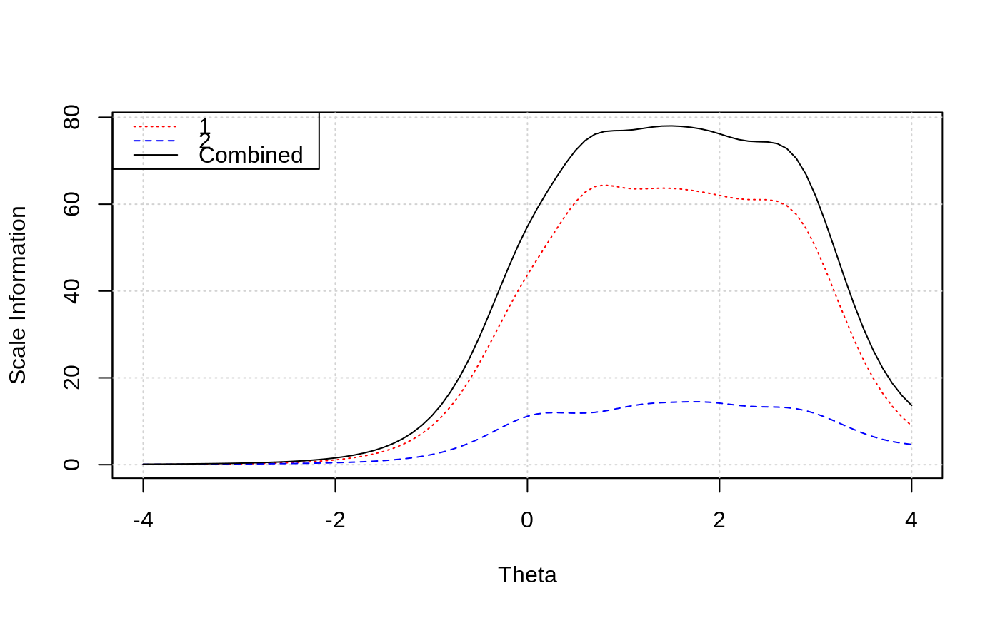

plotInfo is a plotting function to visualize scale-level information.
plotInfo( object, data, theta = seq(-4, 4, 0.1), t_score = FALSE, scale_label = c(1, 2, "Combined"), color = c("red", "blue", "black"), lty = c(3, 2, 1) ) # S4 method for SingleGroupClass plotInfo( object, data, theta = seq(-4, 4, 0.1), t_score = FALSE, scale_label = c(1, 2, "Combined"), color = c("red", "blue", "black"), lty = c(3, 2, 1) )
| object | a |
|---|---|
| data | a |
| theta | theta values to plot on the x-axis. |
| t_score | set to |
| scale_label | names of each scale. |
| color | line colors to plot. |
| lty | line types to plot. |
#>#>#> Iteration: 1, Log-Lik: -25455.892, Max-Change: 5.65432 Iteration: 2, Log-Lik: -23797.560, Max-Change: 1.43832 Iteration: 3, Log-Lik: -23628.029, Max-Change: 0.64961 Iteration: 4, Log-Lik: -23548.749, Max-Change: 0.38055 Iteration: 5, Log-Lik: -23500.707, Max-Change: 0.26763 Iteration: 6, Log-Lik: -23461.760, Max-Change: 0.24313 Iteration: 7, Log-Lik: -23431.938, Max-Change: 0.15656 Iteration: 8, Log-Lik: -23407.322, Max-Change: 0.14222 Iteration: 9, Log-Lik: -23388.165, Max-Change: 0.15375 Iteration: 10, Log-Lik: -23371.592, Max-Change: 0.10763 Iteration: 11, Log-Lik: -23353.037, Max-Change: 0.08862 Iteration: 12, Log-Lik: -23339.073, Max-Change: 0.08080 Iteration: 13, Log-Lik: -23328.299, Max-Change: 0.08490 Iteration: 14, Log-Lik: -23320.188, Max-Change: 0.08289 Iteration: 15, Log-Lik: -23315.310, Max-Change: 0.05720 Iteration: 16, Log-Lik: -23309.518, Max-Change: 0.07428 Iteration: 17, Log-Lik: -23305.336, Max-Change: 0.08033 Iteration: 18, Log-Lik: -23301.939, Max-Change: 0.10009 Iteration: 19, Log-Lik: -23299.170, Max-Change: 0.03978 Iteration: 20, Log-Lik: -23296.063, Max-Change: 0.04314 Iteration: 21, Log-Lik: -23293.461, Max-Change: 0.03392 Iteration: 22, Log-Lik: -23288.875, Max-Change: 0.04563 Iteration: 23, Log-Lik: -23287.114, Max-Change: 0.03085 Iteration: 24, Log-Lik: -23285.620, Max-Change: 0.02825 Iteration: 25, Log-Lik: -23282.533, Max-Change: 0.02388 Iteration: 26, Log-Lik: -23281.576, Max-Change: 0.01945 Iteration: 27, Log-Lik: -23280.889, Max-Change: 0.01837 Iteration: 28, Log-Lik: -23278.377, Max-Change: 0.01704 Iteration: 29, Log-Lik: -23277.857, Max-Change: 0.01216 Iteration: 30, Log-Lik: -23277.413, Max-Change: 0.01177 Iteration: 31, Log-Lik: -23276.097, Max-Change: 0.00948 Iteration: 32, Log-Lik: -23275.771, Max-Change: 0.00947 Iteration: 33, Log-Lik: -23275.492, Max-Change: 0.00965 Iteration: 34, Log-Lik: -23274.384, Max-Change: 0.01421 Iteration: 35, Log-Lik: -23274.112, Max-Change: 0.00786 Iteration: 36, Log-Lik: -23273.905, Max-Change: 0.00612 Iteration: 37, Log-Lik: -23273.567, Max-Change: 0.00702 Iteration: 38, Log-Lik: -23273.389, Max-Change: 0.00603 Iteration: 39, Log-Lik: -23273.216, Max-Change: 0.00646 Iteration: 40, Log-Lik: -23272.995, Max-Change: 0.00532 Iteration: 41, Log-Lik: -23272.836, Max-Change: 0.00733 Iteration: 42, Log-Lik: -23272.687, Max-Change: 0.00577 Iteration: 43, Log-Lik: -23272.537, Max-Change: 0.00504 Iteration: 44, Log-Lik: -23272.395, Max-Change: 0.00790 Iteration: 45, Log-Lik: -23272.267, Max-Change: 0.00543 Iteration: 46, Log-Lik: -23272.169, Max-Change: 0.00666 Iteration: 47, Log-Lik: -23272.054, Max-Change: 0.00500 Iteration: 48, Log-Lik: -23271.944, Max-Change: 0.00485 Iteration: 49, Log-Lik: -23271.714, Max-Change: 0.00555 Iteration: 50, Log-Lik: -23271.604, Max-Change: 0.00763 Iteration: 51, Log-Lik: -23271.509, Max-Change: 0.00399 Iteration: 52, Log-Lik: -23271.395, Max-Change: 0.00610 Iteration: 53, Log-Lik: -23271.306, Max-Change: 0.00394 Iteration: 54, Log-Lik: -23271.221, Max-Change: 0.00596 Iteration: 55, Log-Lik: -23271.060, Max-Change: 0.01442 Iteration: 56, Log-Lik: -23270.981, Max-Change: 0.00444 Iteration: 57, Log-Lik: -23270.905, Max-Change: 0.00377 Iteration: 58, Log-Lik: -23270.724, Max-Change: 0.00933 Iteration: 59, Log-Lik: -23270.658, Max-Change: 0.00397 Iteration: 60, Log-Lik: -23270.591, Max-Change: 0.00536 Iteration: 61, Log-Lik: -23270.482, Max-Change: 0.00373 Iteration: 62, Log-Lik: -23270.429, Max-Change: 0.00521 Iteration: 63, Log-Lik: -23270.374, Max-Change: 0.00336 Iteration: 64, Log-Lik: -23270.311, Max-Change: 0.00504 Iteration: 65, Log-Lik: -23270.261, Max-Change: 0.00344 Iteration: 66, Log-Lik: -23270.216, Max-Change: 0.00612 Iteration: 67, Log-Lik: -23270.153, Max-Change: 0.00414 Iteration: 68, Log-Lik: -23270.108, Max-Change: 0.00573 Iteration: 69, Log-Lik: -23270.063, Max-Change: 0.00309 Iteration: 70, Log-Lik: -23270.028, Max-Change: 0.00524 Iteration: 71, Log-Lik: -23269.987, Max-Change: 0.00318 Iteration: 72, Log-Lik: -23269.950, Max-Change: 0.00470 Iteration: 73, Log-Lik: -23269.896, Max-Change: 0.00314 Iteration: 74, Log-Lik: -23269.862, Max-Change: 0.00352 Iteration: 75, Log-Lik: -23269.828, Max-Change: 0.00328 Iteration: 76, Log-Lik: -23269.786, Max-Change: 0.00625 Iteration: 77, Log-Lik: -23269.752, Max-Change: 0.00298 Iteration: 78, Log-Lik: -23269.722, Max-Change: 0.00584 Iteration: 79, Log-Lik: -23269.681, Max-Change: 0.00286 Iteration: 80, Log-Lik: -23269.653, Max-Change: 0.00279 Iteration: 81, Log-Lik: -23269.626, Max-Change: 0.00286 Iteration: 82, Log-Lik: -23269.576, Max-Change: 0.00654 Iteration: 83, Log-Lik: -23269.547, Max-Change: 0.00263 Iteration: 84, Log-Lik: -23269.523, Max-Change: 0.00538 Iteration: 85, Log-Lik: -23269.490, Max-Change: 0.00270 Iteration: 86, Log-Lik: -23269.468, Max-Change: 0.00259 Iteration: 87, Log-Lik: -23269.446, Max-Change: 0.00265 Iteration: 88, Log-Lik: -23269.411, Max-Change: 0.00600 Iteration: 89, Log-Lik: -23269.387, Max-Change: 0.00250 Iteration: 90, Log-Lik: -23269.368, Max-Change: 0.00218 Iteration: 91, Log-Lik: -23269.295, Max-Change: 0.00746 Iteration: 92, Log-Lik: -23269.273, Max-Change: 0.00195 Iteration: 93, Log-Lik: -23269.259, Max-Change: 0.00678 Iteration: 94, Log-Lik: -23269.238, Max-Change: 0.00212 Iteration: 95, Log-Lik: -23269.224, Max-Change: 0.00200 Iteration: 96, Log-Lik: -23269.211, Max-Change: 0.00294 Iteration: 97, Log-Lik: -23269.189, Max-Change: 0.00254 Iteration: 98, Log-Lik: -23269.177, Max-Change: 0.00179 Iteration: 99, Log-Lik: -23269.165, Max-Change: 0.00369 Iteration: 100, Log-Lik: -23269.146, Max-Change: 0.00239 Iteration: 101, Log-Lik: -23269.132, Max-Change: 0.00171 Iteration: 102, Log-Lik: -23269.121, Max-Change: 0.00533 Iteration: 103, Log-Lik: -23269.106, Max-Change: 0.00190 Iteration: 104, Log-Lik: -23269.095, Max-Change: 0.00145 Iteration: 105, Log-Lik: -23269.086, Max-Change: 0.00173 Iteration: 106, Log-Lik: -23269.054, Max-Change: 0.00714 Iteration: 107, Log-Lik: -23269.041, Max-Change: 0.00144 Iteration: 108, Log-Lik: -23269.033, Max-Change: 0.00157 Iteration: 109, Log-Lik: -23268.989, Max-Change: 0.00788 Iteration: 110, Log-Lik: -23268.975, Max-Change: 0.00165 Iteration: 111, Log-Lik: -23268.968, Max-Change: 0.00144 Iteration: 112, Log-Lik: -23268.940, Max-Change: 0.00298 Iteration: 113, Log-Lik: -23268.932, Max-Change: 0.00653 Iteration: 114, Log-Lik: -23268.922, Max-Change: 0.00189 Iteration: 115, Log-Lik: -23268.921, Max-Change: 0.00176 Iteration: 116, Log-Lik: -23268.915, Max-Change: 0.00156 Iteration: 117, Log-Lik: -23268.910, Max-Change: 0.00091 Iteration: 118, Log-Lik: -23268.900, Max-Change: 0.00676 Iteration: 119, Log-Lik: -23268.892, Max-Change: 0.00128 Iteration: 120, Log-Lik: -23268.888, Max-Change: 0.00122 Iteration: 121, Log-Lik: -23268.873, Max-Change: 0.00221 Iteration: 122, Log-Lik: -23268.868, Max-Change: 0.00103 Iteration: 123, Log-Lik: -23268.864, Max-Change: 0.00099 Iteration: 124, Log-Lik: -23268.857, Max-Change: 0.00499 Iteration: 125, Log-Lik: -23268.851, Max-Change: 0.00129 Iteration: 126, Log-Lik: -23268.847, Max-Change: 0.00077 Iteration: 127, Log-Lik: -23268.842, Max-Change: 0.00121 Iteration: 128, Log-Lik: -23268.839, Max-Change: 0.00064 Iteration: 129, Log-Lik: -23268.836, Max-Change: 0.00065 Iteration: 130, Log-Lik: -23268.824, Max-Change: 0.00439 Iteration: 131, Log-Lik: -23268.819, Max-Change: 0.00110 Iteration: 132, Log-Lik: -23268.817, Max-Change: 0.00085 Iteration: 133, Log-Lik: -23268.812, Max-Change: 0.00088 Iteration: 134, Log-Lik: -23268.810, Max-Change: 0.00066 Iteration: 135, Log-Lik: -23268.808, Max-Change: 0.00065 Iteration: 136, Log-Lik: -23268.804, Max-Change: 0.00108 Iteration: 137, Log-Lik: -23268.803, Max-Change: 0.00050 Iteration: 138, Log-Lik: -23268.801, Max-Change: 0.00056 Iteration: 139, Log-Lik: -23268.795, Max-Change: 0.00067 Iteration: 140, Log-Lik: -23268.793, Max-Change: 0.00050 Iteration: 141, Log-Lik: -23268.792, Max-Change: 0.00053 Iteration: 142, Log-Lik: -23268.788, Max-Change: 0.00139 Iteration: 143, Log-Lik: -23268.788, Max-Change: 0.00240 Iteration: 144, Log-Lik: -23268.788, Max-Change: 0.00215 Iteration: 145, Log-Lik: -23268.786, Max-Change: 0.00081 Iteration: 146, Log-Lik: -23268.786, Max-Change: 0.00102 Iteration: 147, Log-Lik: -23268.786, Max-Change: 0.00175 Iteration: 148, Log-Lik: -23268.785, Max-Change: 0.00148 Iteration: 149, Log-Lik: -23268.785, Max-Change: 0.00243 Iteration: 150, Log-Lik: -23268.785, Max-Change: 0.00107 Iteration: 151, Log-Lik: -23268.782, Max-Change: 0.00167 Iteration: 152, Log-Lik: -23268.782, Max-Change: 0.00054 Iteration: 153, Log-Lik: -23268.782, Max-Change: 0.00139 Iteration: 154, Log-Lik: -23268.782, Max-Change: 0.00104 Iteration: 155, Log-Lik: -23268.779, Max-Change: 0.00175 Iteration: 156, Log-Lik: -23268.779, Max-Change: 0.00057 Iteration: 157, Log-Lik: -23268.779, Max-Change: 0.00050 Iteration: 158, Log-Lik: -23268.779, Max-Change: 0.00129 Iteration: 159, Log-Lik: -23268.779, Max-Change: 0.00177 Iteration: 160, Log-Lik: -23268.778, Max-Change: 0.00156 Iteration: 161, Log-Lik: -23268.778, Max-Change: 0.00217 Iteration: 162, Log-Lik: -23268.778, Max-Change: 0.00677 Iteration: 163, Log-Lik: -23268.773, Max-Change: 0.00108 Iteration: 164, Log-Lik: -23268.772, Max-Change: 0.00078 Iteration: 165, Log-Lik: -23268.771, Max-Change: 0.00135 Iteration: 166, Log-Lik: -23268.771, Max-Change: 0.00133 Iteration: 167, Log-Lik: -23268.771, Max-Change: 0.00224 Iteration: 168, Log-Lik: -23268.770, Max-Change: 0.00202 Iteration: 169, Log-Lik: -23268.770, Max-Change: 0.00085 Iteration: 170, Log-Lik: -23268.769, Max-Change: 0.00107 Iteration: 171, Log-Lik: -23268.769, Max-Change: 0.00181 Iteration: 172, Log-Lik: -23268.769, Max-Change: 0.00134 Iteration: 173, Log-Lik: -23268.769, Max-Change: 0.00044 Iteration: 174, Log-Lik: -23268.768, Max-Change: 0.00114 Iteration: 175, Log-Lik: -23268.768, Max-Change: 0.00052 Iteration: 176, Log-Lik: -23268.768, Max-Change: 0.00126 Iteration: 177, Log-Lik: -23268.768, Max-Change: 0.00041 Iteration: 178, Log-Lik: -23268.768, Max-Change: 0.00184 Iteration: 179, Log-Lik: -23268.768, Max-Change: 0.00052 Iteration: 180, Log-Lik: -23268.768, Max-Change: 0.00126 Iteration: 181, Log-Lik: -23268.768, Max-Change: 0.00118 Iteration: 182, Log-Lik: -23268.766, Max-Change: 0.00136 Iteration: 183, Log-Lik: -23268.766, Max-Change: 0.00039 Iteration: 184, Log-Lik: -23268.766, Max-Change: 0.00171 Iteration: 185, Log-Lik: -23268.766, Max-Change: 0.00054 Iteration: 186, Log-Lik: -23268.766, Max-Change: 0.00139 Iteration: 187, Log-Lik: -23268.766, Max-Change: 0.00089 Iteration: 188, Log-Lik: -23268.764, Max-Change: 0.00116 Iteration: 189, Log-Lik: -23268.764, Max-Change: 0.00038 Iteration: 190, Log-Lik: -23268.764, Max-Change: 0.00169 Iteration: 191, Log-Lik: -23268.764, Max-Change: 0.00048 Iteration: 192, Log-Lik: -23268.764, Max-Change: 0.00117 Iteration: 193, Log-Lik: -23268.764, Max-Change: 0.00112 Iteration: 194, Log-Lik: -23268.763, Max-Change: 0.00114 Iteration: 195, Log-Lik: -23268.763, Max-Change: 0.00033 Iteration: 196, Log-Lik: -23268.763, Max-Change: 0.00144 Iteration: 197, Log-Lik: -23268.762, Max-Change: 0.00046 Iteration: 198, Log-Lik: -23268.762, Max-Change: 0.00117 Iteration: 199, Log-Lik: -23268.762, Max-Change: 0.00059 Iteration: 200, Log-Lik: -23268.762, Max-Change: 0.00144 Iteration: 201, Log-Lik: -23268.762, Max-Change: 0.00046 Iteration: 202, Log-Lik: -23268.762, Max-Change: 0.00040 Iteration: 203, Log-Lik: -23268.762, Max-Change: 0.00103 Iteration: 204, Log-Lik: -23268.762, Max-Change: 0.00144 Iteration: 205, Log-Lik: -23268.762, Max-Change: 0.00116 Iteration: 206, Log-Lik: -23268.761, Max-Change: 0.00033 Iteration: 207, Log-Lik: -23268.761, Max-Change: 0.00080 Iteration: 208, Log-Lik: -23268.761, Max-Change: 0.00043 Iteration: 209, Log-Lik: -23268.761, Max-Change: 0.00110 Iteration: 210, Log-Lik: -23268.761, Max-Change: 0.00155 Iteration: 211, Log-Lik: -23268.761, Max-Change: 0.00118 Iteration: 212, Log-Lik: -23268.761, Max-Change: 0.00033 Iteration: 213, Log-Lik: -23268.761, Max-Change: 0.00081 Iteration: 214, Log-Lik: -23268.761, Max-Change: 0.00044 Iteration: 215, Log-Lik: -23268.760, Max-Change: 0.00113 Iteration: 216, Log-Lik: -23268.760, Max-Change: 0.00032 Iteration: 217, Log-Lik: -23268.760, Max-Change: 0.00140 Iteration: 218, Log-Lik: -23268.760, Max-Change: 0.00044 Iteration: 219, Log-Lik: -23268.760, Max-Change: 0.00112 Iteration: 220, Log-Lik: -23268.760, Max-Change: 0.00057 Iteration: 221, Log-Lik: -23268.760, Max-Change: 0.00140 Iteration: 222, Log-Lik: -23268.760, Max-Change: 0.00044 Iteration: 223, Log-Lik: -23268.760, Max-Change: 0.00039 Iteration: 224, Log-Lik: -23268.760, Max-Change: 0.00099 Iteration: 225, Log-Lik: -23268.760, Max-Change: 0.00139 Iteration: 226, Log-Lik: -23268.759, Max-Change: 0.00110 Iteration: 227, Log-Lik: -23268.759, Max-Change: 0.00031 Iteration: 228, Log-Lik: -23268.759, Max-Change: 0.00075 Iteration: 229, Log-Lik: -23268.759, Max-Change: 0.00041 Iteration: 230, Log-Lik: -23268.759, Max-Change: 0.00104 Iteration: 231, Log-Lik: -23268.759, Max-Change: 0.00029 Iteration: 232, Log-Lik: -23268.759, Max-Change: 0.00129 Iteration: 233, Log-Lik: -23268.759, Max-Change: 0.00041 Iteration: 234, Log-Lik: -23268.759, Max-Change: 0.00104 Iteration: 235, Log-Lik: -23268.759, Max-Change: 0.00052 Iteration: 236, Log-Lik: -23268.759, Max-Change: 0.00128 Iteration: 237, Log-Lik: -23268.758, Max-Change: 0.00041 Iteration: 238, Log-Lik: -23268.758, Max-Change: 0.00036 Iteration: 239, Log-Lik: -23268.758, Max-Change: 0.00092 Iteration: 240, Log-Lik: -23268.758, Max-Change: 0.00128 Iteration: 241, Log-Lik: -23268.758, Max-Change: 0.00103 Iteration: 242, Log-Lik: -23268.758, Max-Change: 0.00029 Iteration: 243, Log-Lik: -23268.758, Max-Change: 0.00071 Iteration: 244, Log-Lik: -23268.758, Max-Change: 0.00038 Iteration: 245, Log-Lik: -23268.758, Max-Change: 0.00098 Iteration: 246, Log-Lik: -23268.758, Max-Change: 0.00138 Iteration: 247, Log-Lik: -23268.758, Max-Change: 0.00105 Iteration: 248, Log-Lik: -23268.757, Max-Change: 0.00030 Iteration: 249, Log-Lik: -23268.757, Max-Change: 0.00072 Iteration: 250, Log-Lik: -23268.757, Max-Change: 0.00039 Iteration: 251, Log-Lik: -23268.757, Max-Change: 0.00100 Iteration: 252, Log-Lik: -23268.757, Max-Change: 0.00028 Iteration: 253, Log-Lik: -23268.757, Max-Change: 0.00124 Iteration: 254, Log-Lik: -23268.757, Max-Change: 0.00039 Iteration: 255, Log-Lik: -23268.757, Max-Change: 0.00099 Iteration: 256, Log-Lik: -23268.757, Max-Change: 0.00050 Iteration: 257, Log-Lik: -23268.757, Max-Change: 0.00124 Iteration: 258, Log-Lik: -23268.757, Max-Change: 0.00039 Iteration: 259, Log-Lik: -23268.757, Max-Change: 0.00035 Iteration: 260, Log-Lik: -23268.757, Max-Change: 0.00088 Iteration: 261, Log-Lik: -23268.757, Max-Change: 0.00124 Iteration: 262, Log-Lik: -23268.756, Max-Change: 0.00098 Iteration: 263, Log-Lik: -23268.756, Max-Change: 0.00028 Iteration: 264, Log-Lik: -23268.756, Max-Change: 0.00067 Iteration: 265, Log-Lik: -23268.756, Max-Change: 0.00036 Iteration: 266, Log-Lik: -23268.756, Max-Change: 0.00092 Iteration: 267, Log-Lik: -23268.756, Max-Change: 0.00131 Iteration: 268, Log-Lik: -23268.756, Max-Change: 0.00099 Iteration: 269, Log-Lik: -23268.756, Max-Change: 0.00028 Iteration: 270, Log-Lik: -23268.756, Max-Change: 0.00068 Iteration: 271, Log-Lik: -23268.756, Max-Change: 0.00037 Iteration: 272, Log-Lik: -23268.756, Max-Change: 0.00094 Iteration: 273, Log-Lik: -23268.756, Max-Change: 0.00027 Iteration: 274, Log-Lik: -23268.756, Max-Change: 0.00117 Iteration: 275, Log-Lik: -23268.756, Max-Change: 0.00037 Iteration: 276, Log-Lik: -23268.755, Max-Change: 0.00094 Iteration: 277, Log-Lik: -23268.755, Max-Change: 0.00048 Iteration: 278, Log-Lik: -23268.755, Max-Change: 0.00117 Iteration: 279, Log-Lik: -23268.755, Max-Change: 0.00037 Iteration: 280, Log-Lik: -23268.755, Max-Change: 0.00033 Iteration: 281, Log-Lik: -23268.755, Max-Change: 0.00083 Iteration: 282, Log-Lik: -23268.755, Max-Change: 0.00117 Iteration: 283, Log-Lik: -23268.755, Max-Change: 0.00092 Iteration: 284, Log-Lik: -23268.755, Max-Change: 0.00026 Iteration: 285, Log-Lik: -23268.755, Max-Change: 0.00063 Iteration: 286, Log-Lik: -23268.755, Max-Change: 0.00034 Iteration: 287, Log-Lik: -23268.755, Max-Change: 0.00087 Iteration: 288, Log-Lik: -23268.755, Max-Change: 0.00123 Iteration: 289, Log-Lik: -23268.755, Max-Change: 0.00093 Iteration: 290, Log-Lik: -23268.755, Max-Change: 0.00026 Iteration: 291, Log-Lik: -23268.754, Max-Change: 0.00064 Iteration: 292, Log-Lik: -23268.754, Max-Change: 0.00035 Iteration: 293, Log-Lik: -23268.754, Max-Change: 0.00088 Iteration: 294, Log-Lik: -23268.754, Max-Change: 0.00025 Iteration: 295, Log-Lik: -23268.754, Max-Change: 0.00110 Iteration: 296, Log-Lik: -23268.754, Max-Change: 0.00035 Iteration: 297, Log-Lik: -23268.754, Max-Change: 0.00088 Iteration: 298, Log-Lik: -23268.754, Max-Change: 0.00045 Iteration: 299, Log-Lik: -23268.754, Max-Change: 0.00110 Iteration: 300, Log-Lik: -23268.754, Max-Change: 0.00035 Iteration: 301, Log-Lik: -23268.754, Max-Change: 0.00031 Iteration: 302, Log-Lik: -23268.754, Max-Change: 0.00078 Iteration: 303, Log-Lik: -23268.754, Max-Change: 0.00110 Iteration: 304, Log-Lik: -23268.754, Max-Change: 0.00086 Iteration: 305, Log-Lik: -23268.754, Max-Change: 0.00025 Iteration: 306, Log-Lik: -23268.754, Max-Change: 0.00060 Iteration: 307, Log-Lik: -23268.754, Max-Change: 0.00032 Iteration: 308, Log-Lik: -23268.753, Max-Change: 0.00082 Iteration: 309, Log-Lik: -23268.753, Max-Change: 0.00116 Iteration: 310, Log-Lik: -23268.753, Max-Change: 0.00087 Iteration: 311, Log-Lik: -23268.753, Max-Change: 0.00025 Iteration: 312, Log-Lik: -23268.753, Max-Change: 0.00060 Iteration: 313, Log-Lik: -23268.753, Max-Change: 0.00033 Iteration: 314, Log-Lik: -23268.753, Max-Change: 0.00083 Iteration: 315, Log-Lik: -23268.753, Max-Change: 0.00024 Iteration: 316, Log-Lik: -23268.753, Max-Change: 0.00104 Iteration: 317, Log-Lik: -23268.753, Max-Change: 0.00033 Iteration: 318, Log-Lik: -23268.753, Max-Change: 0.00083 Iteration: 319, Log-Lik: -23268.753, Max-Change: 0.00042 Iteration: 320, Log-Lik: -23268.753, Max-Change: 0.00104 Iteration: 321, Log-Lik: -23268.753, Max-Change: 0.00033 Iteration: 322, Log-Lik: -23268.753, Max-Change: 0.00029 Iteration: 323, Log-Lik: -23268.753, Max-Change: 0.00073 Iteration: 324, Log-Lik: -23268.753, Max-Change: 0.00104 Iteration: 325, Log-Lik: -23268.753, Max-Change: 0.00081 Iteration: 326, Log-Lik: -23268.752, Max-Change: 0.00023 Iteration: 327, Log-Lik: -23268.752, Max-Change: 0.00056 Iteration: 328, Log-Lik: -23268.752, Max-Change: 0.00030 Iteration: 329, Log-Lik: -23268.752, Max-Change: 0.00077 Iteration: 330, Log-Lik: -23268.752, Max-Change: 0.00109 Iteration: 331, Log-Lik: -23268.752, Max-Change: 0.00082 Iteration: 332, Log-Lik: -23268.752, Max-Change: 0.00023 Iteration: 333, Log-Lik: -23268.752, Max-Change: 0.00057 Iteration: 334, Log-Lik: -23268.752, Max-Change: 0.00031 Iteration: 335, Log-Lik: -23268.752, Max-Change: 0.00078 Iteration: 336, Log-Lik: -23268.752, Max-Change: 0.00022 Iteration: 337, Log-Lik: -23268.752, Max-Change: 0.00098 Iteration: 338, Log-Lik: -23268.752, Max-Change: 0.00031 Iteration: 339, Log-Lik: -23268.752, Max-Change: 0.00078 Iteration: 340, Log-Lik: -23268.752, Max-Change: 0.00040 Iteration: 341, Log-Lik: -23268.752, Max-Change: 0.00098 Iteration: 342, Log-Lik: -23268.752, Max-Change: 0.00031 Iteration: 343, Log-Lik: -23268.752, Max-Change: 0.00027 Iteration: 344, Log-Lik: -23268.752, Max-Change: 0.00069 Iteration: 345, Log-Lik: -23268.752, Max-Change: 0.00098 Iteration: 346, Log-Lik: -23268.752, Max-Change: 0.00076 Iteration: 347, Log-Lik: -23268.751, Max-Change: 0.00022 Iteration: 348, Log-Lik: -23268.751, Max-Change: 0.00053 Iteration: 349, Log-Lik: -23268.751, Max-Change: 0.00028 Iteration: 350, Log-Lik: -23268.751, Max-Change: 0.00072 Iteration: 351, Log-Lik: -23268.751, Max-Change: 0.00103 Iteration: 352, Log-Lik: -23268.751, Max-Change: 0.00077 Iteration: 353, Log-Lik: -23268.751, Max-Change: 0.00022 Iteration: 354, Log-Lik: -23268.751, Max-Change: 0.00054 Iteration: 355, Log-Lik: -23268.751, Max-Change: 0.00029 Iteration: 356, Log-Lik: -23268.751, Max-Change: 0.00073 Iteration: 357, Log-Lik: -23268.751, Max-Change: 0.00021 Iteration: 358, Log-Lik: -23268.751, Max-Change: 0.00092 Iteration: 359, Log-Lik: -23268.751, Max-Change: 0.00029 Iteration: 360, Log-Lik: -23268.751, Max-Change: 0.00073 Iteration: 361, Log-Lik: -23268.751, Max-Change: 0.00037 Iteration: 362, Log-Lik: -23268.751, Max-Change: 0.00092 Iteration: 363, Log-Lik: -23268.751, Max-Change: 0.00029 Iteration: 364, Log-Lik: -23268.751, Max-Change: 0.00026 Iteration: 365, Log-Lik: -23268.751, Max-Change: 0.00065 Iteration: 366, Log-Lik: -23268.751, Max-Change: 0.00092 Iteration: 367, Log-Lik: -23268.751, Max-Change: 0.00072 Iteration: 368, Log-Lik: -23268.751, Max-Change: 0.00020 Iteration: 369, Log-Lik: -23268.751, Max-Change: 0.00050 Iteration: 370, Log-Lik: -23268.751, Max-Change: 0.00027 Iteration: 371, Log-Lik: -23268.750, Max-Change: 0.00068 Iteration: 372, Log-Lik: -23268.750, Max-Change: 0.00097 Iteration: 373, Log-Lik: -23268.750, Max-Change: 0.00073 Iteration: 374, Log-Lik: -23268.750, Max-Change: 0.00021 Iteration: 375, Log-Lik: -23268.750, Max-Change: 0.00051 Iteration: 376, Log-Lik: -23268.750, Max-Change: 0.00027 Iteration: 377, Log-Lik: -23268.750, Max-Change: 0.00069 Iteration: 378, Log-Lik: -23268.750, Max-Change: 0.00020 Iteration: 379, Log-Lik: -23268.750, Max-Change: 0.00087 Iteration: 380, Log-Lik: -23268.750, Max-Change: 0.00027 Iteration: 381, Log-Lik: -23268.750, Max-Change: 0.00069 Iteration: 382, Log-Lik: -23268.750, Max-Change: 0.00035 Iteration: 383, Log-Lik: -23268.750, Max-Change: 0.00087 Iteration: 384, Log-Lik: -23268.750, Max-Change: 0.00027 Iteration: 385, Log-Lik: -23268.750, Max-Change: 0.00024 Iteration: 386, Log-Lik: -23268.750, Max-Change: 0.00061 Iteration: 387, Log-Lik: -23268.750, Max-Change: 0.00087 Iteration: 388, Log-Lik: -23268.750, Max-Change: 0.00068 Iteration: 389, Log-Lik: -23268.750, Max-Change: 0.00019 Iteration: 390, Log-Lik: -23268.750, Max-Change: 0.00047 Iteration: 391, Log-Lik: -23268.750, Max-Change: 0.00025 Iteration: 392, Log-Lik: -23268.750, Max-Change: 0.00064 Iteration: 393, Log-Lik: -23268.750, Max-Change: 0.00091 Iteration: 394, Log-Lik: -23268.750, Max-Change: 0.00068 Iteration: 395, Log-Lik: -23268.750, Max-Change: 0.00020 Iteration: 396, Log-Lik: -23268.750, Max-Change: 0.00048 Iteration: 397, Log-Lik: -23268.749, Max-Change: 0.00026 Iteration: 398, Log-Lik: -23268.749, Max-Change: 0.00065 Iteration: 399, Log-Lik: -23268.749, Max-Change: 0.00019 Iteration: 400, Log-Lik: -23268.749, Max-Change: 0.00082 Iteration: 401, Log-Lik: -23268.749, Max-Change: 0.00026 Iteration: 402, Log-Lik: -23268.749, Max-Change: 0.00065 Iteration: 403, Log-Lik: -23268.749, Max-Change: 0.00033 Iteration: 404, Log-Lik: -23268.749, Max-Change: 0.00082 Iteration: 405, Log-Lik: -23268.749, Max-Change: 0.00026 Iteration: 406, Log-Lik: -23268.749, Max-Change: 0.00023 Iteration: 407, Log-Lik: -23268.749, Max-Change: 0.00058 Iteration: 408, Log-Lik: -23268.749, Max-Change: 0.00082 Iteration: 409, Log-Lik: -23268.749, Max-Change: 0.00064 Iteration: 410, Log-Lik: -23268.749, Max-Change: 0.00018 Iteration: 411, Log-Lik: -23268.749, Max-Change: 0.00044 Iteration: 412, Log-Lik: -23268.749, Max-Change: 0.00024 Iteration: 413, Log-Lik: -23268.749, Max-Change: 0.00060 Iteration: 414, Log-Lik: -23268.749, Max-Change: 0.00086 Iteration: 415, Log-Lik: -23268.749, Max-Change: 0.00065 Iteration: 416, Log-Lik: -23268.749, Max-Change: 0.00018 Iteration: 417, Log-Lik: -23268.749, Max-Change: 0.00045 Iteration: 418, Log-Lik: -23268.749, Max-Change: 0.00024 Iteration: 419, Log-Lik: -23268.749, Max-Change: 0.00061 Iteration: 420, Log-Lik: -23268.749, Max-Change: 0.00018 Iteration: 421, Log-Lik: -23268.749, Max-Change: 0.00077 Iteration: 422, Log-Lik: -23268.749, Max-Change: 0.00024 Iteration: 423, Log-Lik: -23268.749, Max-Change: 0.00061 Iteration: 424, Log-Lik: -23268.749, Max-Change: 0.00031 Iteration: 425, Log-Lik: -23268.749, Max-Change: 0.00077 Iteration: 426, Log-Lik: -23268.749, Max-Change: 0.00024 Iteration: 427, Log-Lik: -23268.749, Max-Change: 0.00021 Iteration: 428, Log-Lik: -23268.749, Max-Change: 0.00054 Iteration: 429, Log-Lik: -23268.749, Max-Change: 0.00077 Iteration: 430, Log-Lik: -23268.748, Max-Change: 0.00060 Iteration: 431, Log-Lik: -23268.748, Max-Change: 0.00017 Iteration: 432, Log-Lik: -23268.748, Max-Change: 0.00042 Iteration: 433, Log-Lik: -23268.748, Max-Change: 0.00022 Iteration: 434, Log-Lik: -23268.748, Max-Change: 0.00057 Iteration: 435, Log-Lik: -23268.748, Max-Change: 0.00081 Iteration: 436, Log-Lik: -23268.748, Max-Change: 0.00061 Iteration: 437, Log-Lik: -23268.748, Max-Change: 0.00017 Iteration: 438, Log-Lik: -23268.748, Max-Change: 0.00042 Iteration: 439, Log-Lik: -23268.748, Max-Change: 0.00023 Iteration: 440, Log-Lik: -23268.748, Max-Change: 0.00058 Iteration: 441, Log-Lik: -23268.748, Max-Change: 0.00017 Iteration: 442, Log-Lik: -23268.748, Max-Change: 0.00073 Iteration: 443, Log-Lik: -23268.748, Max-Change: 0.00023 Iteration: 444, Log-Lik: -23268.748, Max-Change: 0.00058 Iteration: 445, Log-Lik: -23268.748, Max-Change: 0.00030 Iteration: 446, Log-Lik: -23268.748, Max-Change: 0.00073 Iteration: 447, Log-Lik: -23268.748, Max-Change: 0.00023 Iteration: 448, Log-Lik: -23268.748, Max-Change: 0.00020 Iteration: 449, Log-Lik: -23268.748, Max-Change: 0.00051 Iteration: 450, Log-Lik: -23268.748, Max-Change: 0.00073 Iteration: 451, Log-Lik: -23268.748, Max-Change: 0.00057 Iteration: 452, Log-Lik: -23268.748, Max-Change: 0.00016 Iteration: 453, Log-Lik: -23268.748, Max-Change: 0.00040 Iteration: 454, Log-Lik: -23268.748, Max-Change: 0.00021 Iteration: 455, Log-Lik: -23268.748, Max-Change: 0.00054 Iteration: 456, Log-Lik: -23268.748, Max-Change: 0.00077 Iteration: 457, Log-Lik: -23268.748, Max-Change: 0.00057 Iteration: 458, Log-Lik: -23268.748, Max-Change: 0.00016 Iteration: 459, Log-Lik: -23268.748, Max-Change: 0.00040 Iteration: 460, Log-Lik: -23268.748, Max-Change: 0.00022 Iteration: 461, Log-Lik: -23268.748, Max-Change: 0.00055 Iteration: 462, Log-Lik: -23268.748, Max-Change: 0.00016 Iteration: 463, Log-Lik: -23268.748, Max-Change: 0.00069 Iteration: 464, Log-Lik: -23268.748, Max-Change: 0.00021 Iteration: 465, Log-Lik: -23268.748, Max-Change: 0.00055 Iteration: 466, Log-Lik: -23268.748, Max-Change: 0.00028 Iteration: 467, Log-Lik: -23268.747, Max-Change: 0.00069 Iteration: 468, Log-Lik: -23268.747, Max-Change: 0.00021 Iteration: 469, Log-Lik: -23268.747, Max-Change: 0.00019 Iteration: 470, Log-Lik: -23268.747, Max-Change: 0.00048 Iteration: 471, Log-Lik: -23268.747, Max-Change: 0.00068 Iteration: 472, Log-Lik: -23268.747, Max-Change: 0.00054 Iteration: 473, Log-Lik: -23268.747, Max-Change: 0.00015 Iteration: 474, Log-Lik: -23268.747, Max-Change: 0.00037 Iteration: 475, Log-Lik: -23268.747, Max-Change: 0.00020 Iteration: 476, Log-Lik: -23268.747, Max-Change: 0.00051 Iteration: 477, Log-Lik: -23268.747, Max-Change: 0.00072 Iteration: 478, Log-Lik: -23268.747, Max-Change: 0.00054 Iteration: 479, Log-Lik: -23268.747, Max-Change: 0.00015 Iteration: 480, Log-Lik: -23268.747, Max-Change: 0.00038 Iteration: 481, Log-Lik: -23268.747, Max-Change: 0.00020 Iteration: 482, Log-Lik: -23268.747, Max-Change: 0.00052 Iteration: 483, Log-Lik: -23268.747, Max-Change: 0.00015 Iteration: 484, Log-Lik: -23268.747, Max-Change: 0.00065 Iteration: 485, Log-Lik: -23268.747, Max-Change: 0.00020 Iteration: 486, Log-Lik: -23268.747, Max-Change: 0.00051 Iteration: 487, Log-Lik: -23268.747, Max-Change: 0.00026 Iteration: 488, Log-Lik: -23268.747, Max-Change: 0.00065 Iteration: 489, Log-Lik: -23268.747, Max-Change: 0.00020 Iteration: 490, Log-Lik: -23268.747, Max-Change: 0.00018 Iteration: 491, Log-Lik: -23268.747, Max-Change: 0.00046 Iteration: 492, Log-Lik: -23268.747, Max-Change: 0.00065 Iteration: 493, Log-Lik: -23268.747, Max-Change: 0.00051 Iteration: 494, Log-Lik: -23268.747, Max-Change: 0.00014 Iteration: 495, Log-Lik: -23268.747, Max-Change: 0.00035 Iteration: 496, Log-Lik: -23268.747, Max-Change: 0.00019 Iteration: 497, Log-Lik: -23268.747, Max-Change: 0.00048 Iteration: 498, Log-Lik: -23268.747, Max-Change: 0.00068 Iteration: 499, Log-Lik: -23268.747, Max-Change: 0.00051 Iteration: 500, Log-Lik: -23268.747, Max-Change: 0.00015 Iteration: 501, Log-Lik: -23268.747, Max-Change: 0.00036 Iteration: 502, Log-Lik: -23268.747, Max-Change: 0.00019 Iteration: 503, Log-Lik: -23268.747, Max-Change: 0.00049 Iteration: 504, Log-Lik: -23268.747, Max-Change: 0.00014 Iteration: 505, Log-Lik: -23268.747, Max-Change: 0.00061 Iteration: 506, Log-Lik: -23268.747, Max-Change: 0.00019 Iteration: 507, Log-Lik: -23268.747, Max-Change: 0.00049 Iteration: 508, Log-Lik: -23268.747, Max-Change: 0.00025 Iteration: 509, Log-Lik: -23268.747, Max-Change: 0.00061 Iteration: 510, Log-Lik: -23268.747, Max-Change: 0.00019 Iteration: 511, Log-Lik: -23268.747, Max-Change: 0.00017 Iteration: 512, Log-Lik: -23268.747, Max-Change: 0.00043 Iteration: 513, Log-Lik: -23268.747, Max-Change: 0.00061 Iteration: 514, Log-Lik: -23268.747, Max-Change: 0.00048 Iteration: 515, Log-Lik: -23268.747, Max-Change: 0.00014 Iteration: 516, Log-Lik: -23268.747, Max-Change: 0.00033 Iteration: 517, Log-Lik: -23268.746, Max-Change: 0.00018 Iteration: 518, Log-Lik: -23268.746, Max-Change: 0.00045 Iteration: 519, Log-Lik: -23268.746, Max-Change: 0.00064 Iteration: 520, Log-Lik: -23268.746, Max-Change: 0.00048 Iteration: 521, Log-Lik: -23268.746, Max-Change: 0.00014 Iteration: 522, Log-Lik: -23268.746, Max-Change: 0.00034 Iteration: 523, Log-Lik: -23268.746, Max-Change: 0.00018 Iteration: 524, Log-Lik: -23268.746, Max-Change: 0.00046 Iteration: 525, Log-Lik: -23268.746, Max-Change: 0.00066 Iteration: 526, Log-Lik: -23268.746, Max-Change: 0.00048 Iteration: 527, Log-Lik: -23268.746, Max-Change: 0.00014 Iteration: 528, Log-Lik: -23268.746, Max-Change: 0.00034 Iteration: 529, Log-Lik: -23268.746, Max-Change: 0.00018 Iteration: 530, Log-Lik: -23268.746, Max-Change: 0.00046 Iteration: 531, Log-Lik: -23268.746, Max-Change: 0.00013 Iteration: 532, Log-Lik: -23268.746, Max-Change: 0.00058 Iteration: 533, Log-Lik: -23268.746, Max-Change: 0.00018 Iteration: 534, Log-Lik: -23268.746, Max-Change: 0.00046 Iteration: 535, Log-Lik: -23268.746, Max-Change: 0.00024 Iteration: 536, Log-Lik: -23268.746, Max-Change: 0.00058 Iteration: 537, Log-Lik: -23268.746, Max-Change: 0.00018 Iteration: 538, Log-Lik: -23268.746, Max-Change: 0.00016 Iteration: 539, Log-Lik: -23268.746, Max-Change: 0.00041 Iteration: 540, Log-Lik: -23268.746, Max-Change: 0.00058 Iteration: 541, Log-Lik: -23268.746, Max-Change: 0.00045 Iteration: 542, Log-Lik: -23268.746, Max-Change: 0.00013 Iteration: 543, Log-Lik: -23268.746, Max-Change: 0.00031 Iteration: 544, Log-Lik: -23268.746, Max-Change: 0.00017 Iteration: 545, Log-Lik: -23268.746, Max-Change: 0.00042 Iteration: 546, Log-Lik: -23268.746, Max-Change: 0.00060 Iteration: 547, Log-Lik: -23268.746, Max-Change: 0.00045 Iteration: 548, Log-Lik: -23268.746, Max-Change: 0.00013 Iteration: 549, Log-Lik: -23268.746, Max-Change: 0.00031 Iteration: 550, Log-Lik: -23268.746, Max-Change: 0.00017 Iteration: 551, Log-Lik: -23268.746, Max-Change: 0.00043 Iteration: 552, Log-Lik: -23268.746, Max-Change: 0.00012 Iteration: 553, Log-Lik: -23268.746, Max-Change: 0.00054 Iteration: 554, Log-Lik: -23268.746, Max-Change: 0.00017 Iteration: 555, Log-Lik: -23268.746, Max-Change: 0.00043 Iteration: 556, Log-Lik: -23268.746, Max-Change: 0.00022 Iteration: 557, Log-Lik: -23268.746, Max-Change: 0.00054 Iteration: 558, Log-Lik: -23268.746, Max-Change: 0.00017 Iteration: 559, Log-Lik: -23268.746, Max-Change: 0.00015 Iteration: 560, Log-Lik: -23268.746, Max-Change: 0.00038 Iteration: 561, Log-Lik: -23268.746, Max-Change: 0.00054 Iteration: 562, Log-Lik: -23268.746, Max-Change: 0.00042 Iteration: 563, Log-Lik: -23268.746, Max-Change: 0.00012 Iteration: 564, Log-Lik: -23268.746, Max-Change: 0.00029 Iteration: 565, Log-Lik: -23268.746, Max-Change: 0.00016 Iteration: 566, Log-Lik: -23268.746, Max-Change: 0.00040 Iteration: 567, Log-Lik: -23268.746, Max-Change: 0.00057 Iteration: 568, Log-Lik: -23268.746, Max-Change: 0.00042 Iteration: 569, Log-Lik: -23268.746, Max-Change: 0.00012 Iteration: 570, Log-Lik: -23268.746, Max-Change: 0.00030 Iteration: 571, Log-Lik: -23268.746, Max-Change: 0.00016 Iteration: 572, Log-Lik: -23268.746, Max-Change: 0.00040 Iteration: 573, Log-Lik: -23268.746, Max-Change: 0.00012 Iteration: 574, Log-Lik: -23268.746, Max-Change: 0.00051 Iteration: 575, Log-Lik: -23268.746, Max-Change: 0.00016 Iteration: 576, Log-Lik: -23268.746, Max-Change: 0.00040 Iteration: 577, Log-Lik: -23268.746, Max-Change: 0.00021 Iteration: 578, Log-Lik: -23268.746, Max-Change: 0.00051 Iteration: 579, Log-Lik: -23268.746, Max-Change: 0.00016 Iteration: 580, Log-Lik: -23268.746, Max-Change: 0.00014 Iteration: 581, Log-Lik: -23268.746, Max-Change: 0.00036 Iteration: 582, Log-Lik: -23268.746, Max-Change: 0.00051 Iteration: 583, Log-Lik: -23268.745, Max-Change: 0.00039 Iteration: 584, Log-Lik: -23268.745, Max-Change: 0.00011 Iteration: 585, Log-Lik: -23268.745, Max-Change: 0.00028 Iteration: 586, Log-Lik: -23268.745, Max-Change: 0.00015 Iteration: 587, Log-Lik: -23268.745, Max-Change: 0.00037 Iteration: 588, Log-Lik: -23268.745, Max-Change: 0.00053 Iteration: 589, Log-Lik: -23268.745, Max-Change: 0.00040 Iteration: 590, Log-Lik: -23268.745, Max-Change: 0.00011 Iteration: 591, Log-Lik: -23268.745, Max-Change: 0.00028 Iteration: 592, Log-Lik: -23268.745, Max-Change: 0.00015 Iteration: 593, Log-Lik: -23268.745, Max-Change: 0.00038 Iteration: 594, Log-Lik: -23268.745, Max-Change: 0.00054 Iteration: 595, Log-Lik: -23268.745, Max-Change: 0.00040 Iteration: 596, Log-Lik: -23268.745, Max-Change: 0.00011 Iteration: 597, Log-Lik: -23268.745, Max-Change: 0.00028 Iteration: 598, Log-Lik: -23268.745, Max-Change: 0.00015 Iteration: 599, Log-Lik: -23268.745, Max-Change: 0.00038 Iteration: 600, Log-Lik: -23268.745, Max-Change: 0.00011 Iteration: 601, Log-Lik: -23268.745, Max-Change: 0.00048 Iteration: 602, Log-Lik: -23268.745, Max-Change: 0.00015 Iteration: 603, Log-Lik: -23268.745, Max-Change: 0.00038 Iteration: 604, Log-Lik: -23268.745, Max-Change: 0.00019 Iteration: 605, Log-Lik: -23268.745, Max-Change: 0.00048 Iteration: 606, Log-Lik: -23268.745, Max-Change: 0.00015 Iteration: 607, Log-Lik: -23268.745, Max-Change: 0.00013 Iteration: 608, Log-Lik: -23268.745, Max-Change: 0.00034 Iteration: 609, Log-Lik: -23268.745, Max-Change: 0.00048 Iteration: 610, Log-Lik: -23268.745, Max-Change: 0.00037 Iteration: 611, Log-Lik: -23268.745, Max-Change: 0.00011 Iteration: 612, Log-Lik: -23268.745, Max-Change: 0.00026 Iteration: 613, Log-Lik: -23268.745, Max-Change: 0.00014 Iteration: 614, Log-Lik: -23268.745, Max-Change: 0.00035 Iteration: 615, Log-Lik: -23268.745, Max-Change: 0.00050 Iteration: 616, Log-Lik: -23268.745, Max-Change: 0.00037 Iteration: 617, Log-Lik: -23268.745, Max-Change: 0.00011 Iteration: 618, Log-Lik: -23268.745, Max-Change: 0.00026 Iteration: 619, Log-Lik: -23268.745, Max-Change: 0.00014 Iteration: 620, Log-Lik: -23268.745, Max-Change: 0.00035 Iteration: 621, Log-Lik: -23268.745, Max-Change: 0.00010 Iteration: 622, Log-Lik: -23268.745, Max-Change: 0.00045 Iteration: 623, Log-Lik: -23268.745, Max-Change: 0.00014 Iteration: 624, Log-Lik: -23268.745, Max-Change: 0.00035 Iteration: 625, Log-Lik: -23268.745, Max-Change: 0.00018 Iteration: 626, Log-Lik: -23268.745, Max-Change: 0.00045 Iteration: 627, Log-Lik: -23268.745, Max-Change: 0.00014 Iteration: 628, Log-Lik: -23268.745, Max-Change: 0.00012 Iteration: 629, Log-Lik: -23268.745, Max-Change: 0.00031 Iteration: 630, Log-Lik: -23268.745, Max-Change: 0.00045 Iteration: 631, Log-Lik: -23268.745, Max-Change: 0.00035 Iteration: 632, Log-Lik: -23268.745, Max-Change: 0.00010plotInfo(out_calib, data_asq)# }